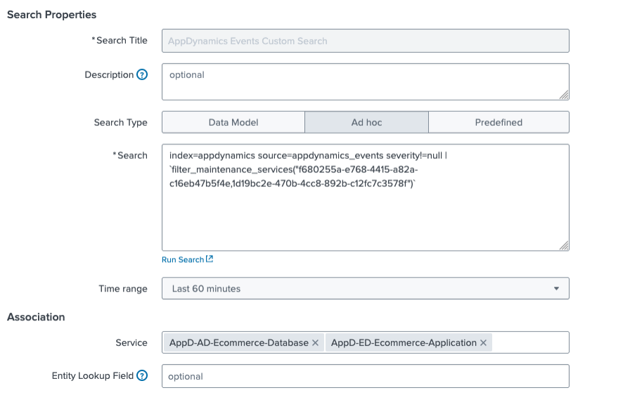
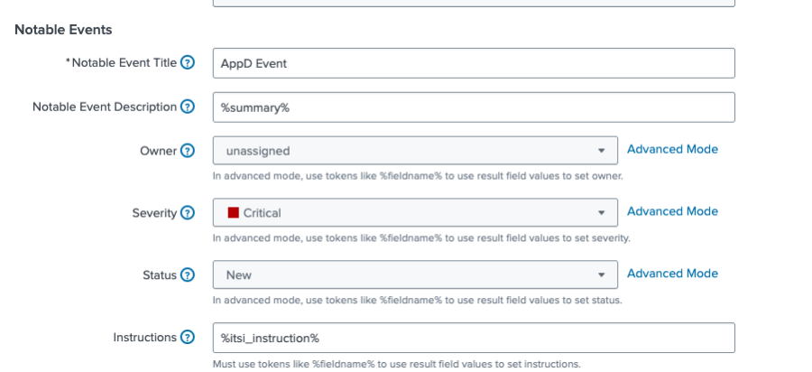
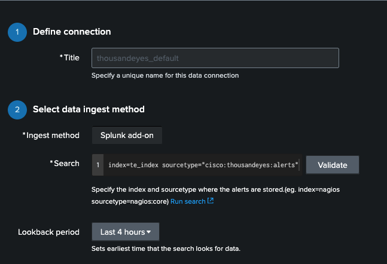
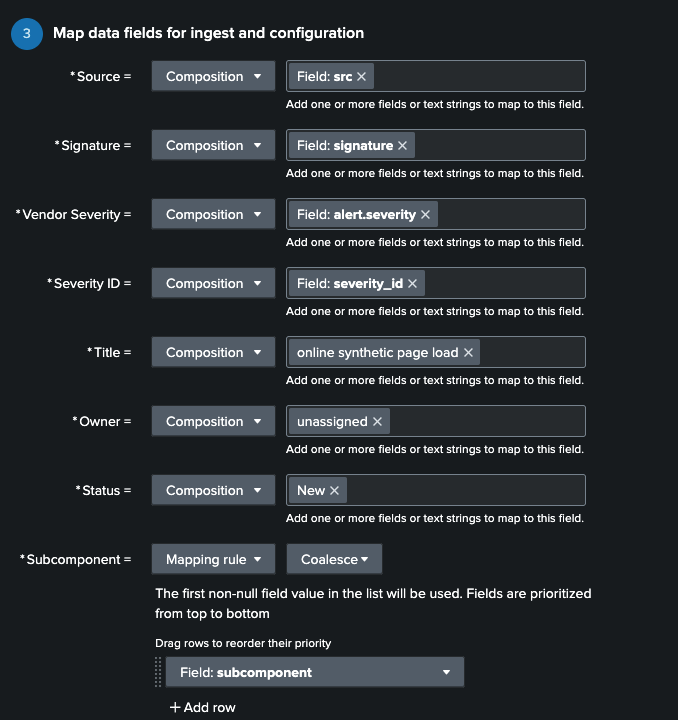
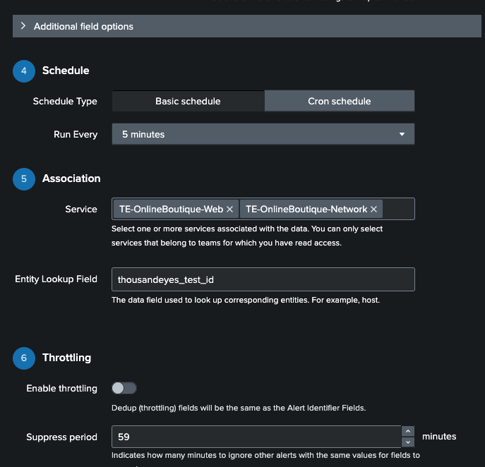
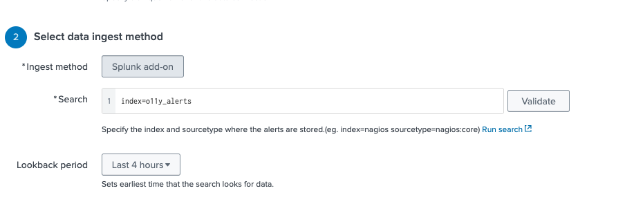
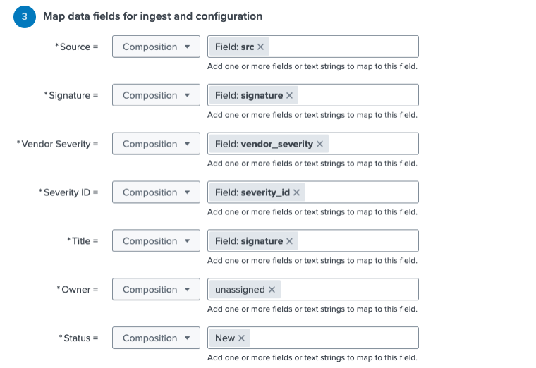
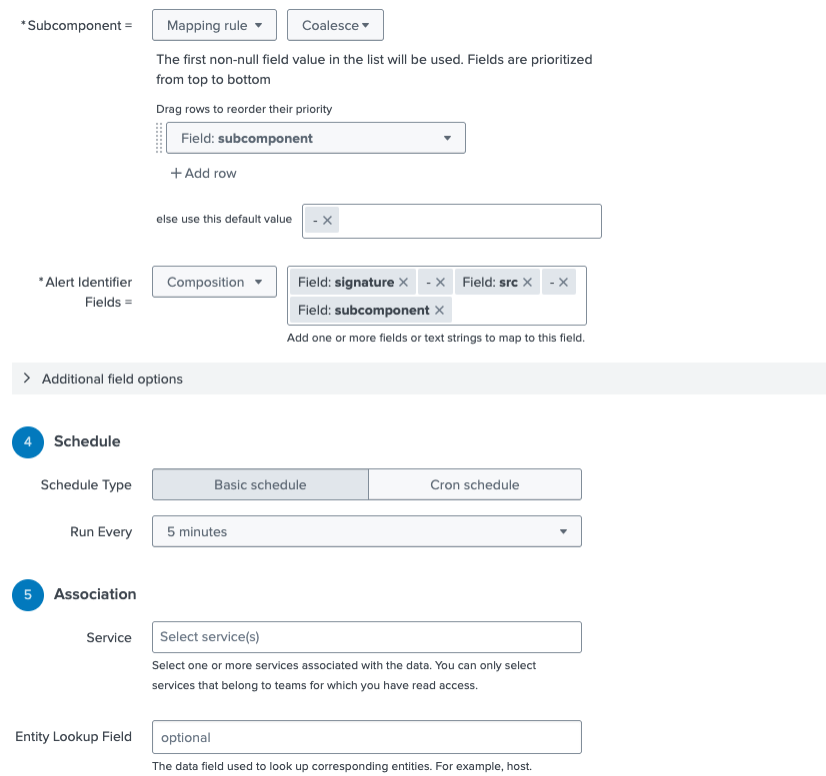
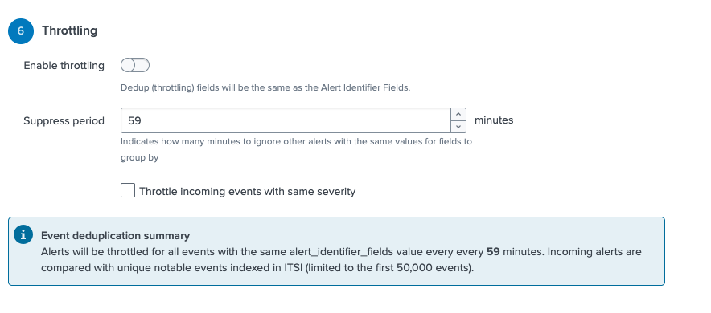
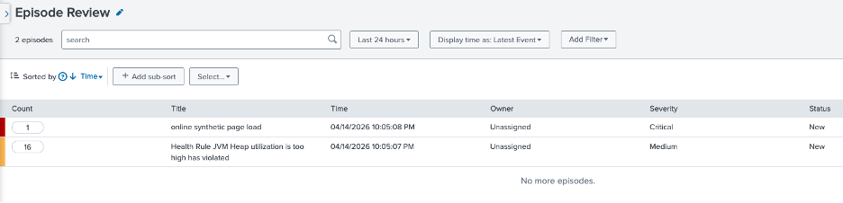

ITSI Alerts & Episodes Configuration Guide
Splunk IT Service Intelligence (ITSI) — Step-by-step guide to configuring alerts and episodes from AppDynamics, ThousandEyes, and Splunk Observability Cloud.
Overview
This guide covers the final phase of the lab: configuring Alerts and Episodes for each of the data sources in your environment. By the end, ITSI will be ingesting and correlating alert data from three platforms:
| Source | Ingestion Method |
|---|---|
| AppDynamics | Correlation Search (index-based) |
| ThousandEyes | Content Pack Correlation Search |
| Splunk Observability Cloud | Webhook → HEC → Correlation Search |
Table of Contents
AppDynamics
Alert ingestion for AppDynamics was already configured alongside the metrics ingestion from the Technology Add-on (TA).
Step 1 — Validate Alert Ingestion
First, confirm that events are arriving in Splunk by running the following search:
index="appdynamics" source=appdynamics_events
Step 2 — Create a Correlation Search
In ITSI, navigate to:
Configuration > Event Management > Correlation Searches > Create New Search > Create Correlation Search
Name the search
AppDynamics Events Custom Search
Search query to use:
index=appdynamics source=appdynamics_events severity!=null
Associate the correlation search with your AppDynamics services:


Click Save.
ThousandEyes
Alert ingestion for ThousandEyes was already configured alongside the metrics ingestion.
Unlike AppDynamics, for ThousandEyes we will use the correlation search that was pre-installed by the content pack rather than creating one from scratch.
Step 1 — Locate the Integration
In ITSI, navigate to:
Configuration > Data Integrations > Deployed Integrations
Select Cisco ThousandEyes and edit the thousandeyes_default entry.
Step 2 — Update the Search
Replace the existing search with the following:
index=te_index sourcetype="cisco:thousandeyes:alerts"
Lookback Last 4 hours
Click Validate
Keep all other fields as shown in the screenshots below:



Step 3 — Save and Activate
Click Save and Activate the integration.
Splunk Observability Cloud
Step 1 — Activate the ITSI Correlation Search
Back in ITSI, navigate to:
Configuration > Data Integrations > Deployed Integrations > Splunk Observability Cloud
Edit the o11y_default entry and set the search to:
index=o11y_alerts
Lookback Last 4 hours
Click Validate
Keep all other fields as shown in the screenshots below:




Click Save and Activate.
Summary
Once all three integrations are configured and active, ITSI will automatically correlate incoming alerts into episodes. The table below summarizes what was configured:
| Source | Index | Correlation Search | Method |
|---|---|---|---|
| AppDynamics | appdynamics |
Created manually | TA-based ingestion |
| ThousandEyes | te_index |
Pre-installed via content pack | TA-based ingestion |
| Splunk O11y | o11y_alerts |
Pre-installed via content pack | Webhook → HEC |
Validation
Now you should see some Episodes with events correlated in the Alerts and Episodes view.
In ITSI, navigate to:
Alerts and Episodes

Troubleshooting
| Issue | Resolution |
|---|---|
| No AppDynamics events in index | Verify the TA is configured and the appdynamics_events source is active |
| ThousandEyes search returns no results | Confirm te_index exists and the sourcetype matches cisco:thousandeyes:alerts |
| O11y webhook not delivering events | Check the HEC token is correct, the endpoint is reachable, and the detector is enabled |
| Correlation search not creating episodes | Verify the search is Activated and the time window settings are appropriate |